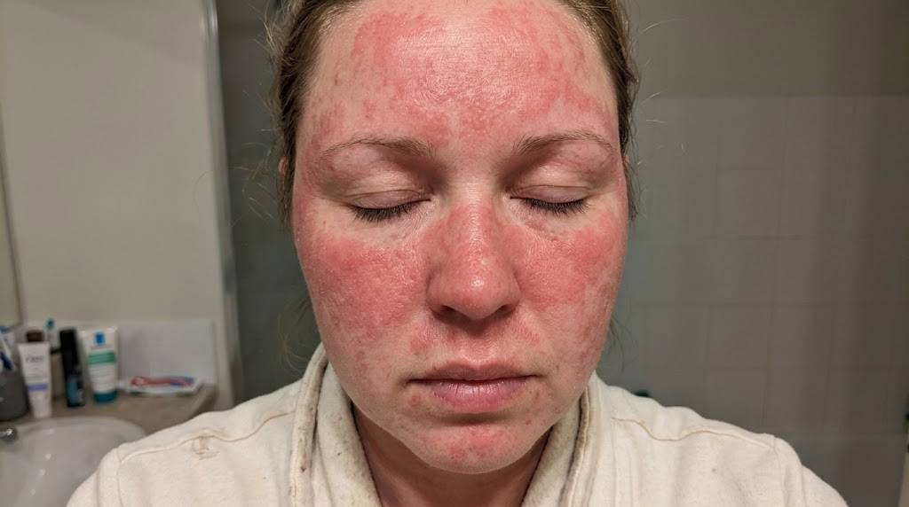
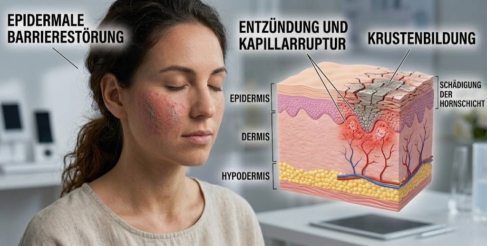
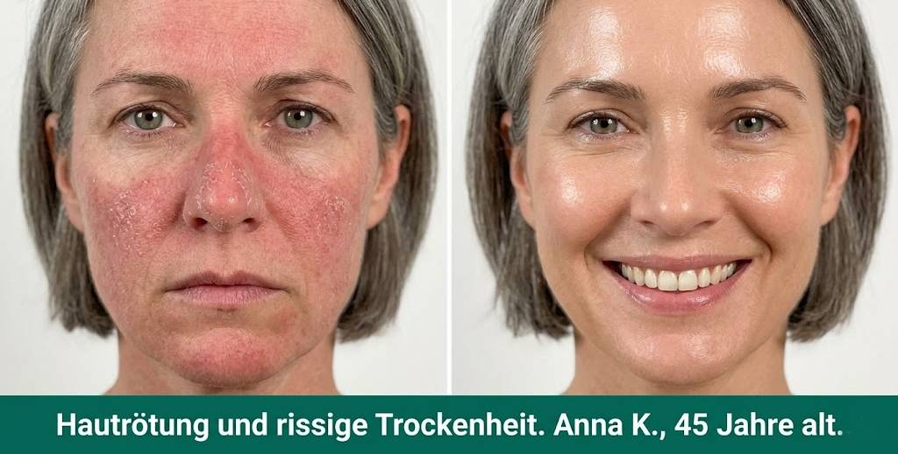
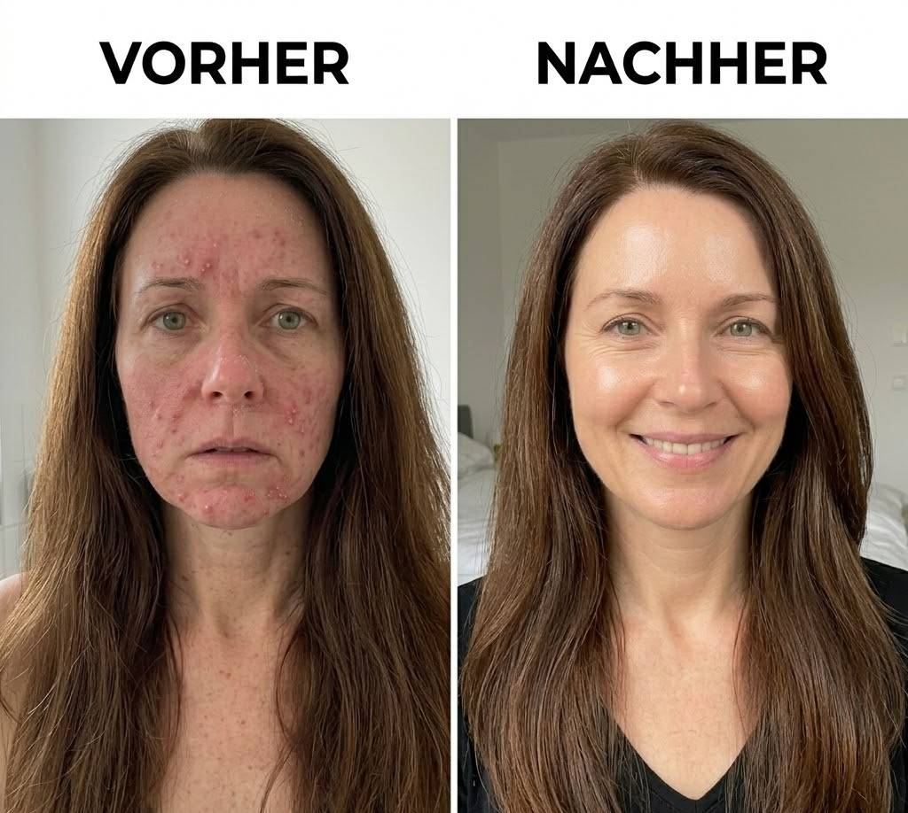

Ich behandle seit 16 Jahren Frauen – und höre immer wieder dieselbe Geschichte.
Eine Frau kommt frustriert zu mir. Sie war bei der Dermatologin, weil ihr Gesicht dauerhaft gerötet war – Wangen, Nase, manchmal das gesamte Gesicht. Diese permanente, entzündete Rötung, die einfach nicht verschwindet, egal was sie versucht.
Die Dermatologin hat ihr eine „gestörte Hautbarriere" diagnostiziert und eine 150-Euro-Creme empfohlen. Sie hat sie drei Monate lang gewissenhaft verwendet.
Ihre Haut wurde SCHLIMMER.

Trockener. Gereizter. Dieses enge, brennende Gefühl, das sich einfach nicht legt.
Sie geht zurück zur Dermatologin. Sie verschreiben etwas Stärkeres. Der Kreislauf geht weiter.
Früher dachte ich, diese Frauen machten etwas falsch.
Dann habe ich mir angesehen, was Dermatologinnen tatsächlich verschreiben – und mir wurde klar: Das Problem lag nicht an den Frauen. Es lag an allem, was man ihnen zu verwenden empfohlen hatte.
Warum die empfohlenen Cremes Ihre Rötungen erst recht verschlimmern

Was Dermatologinnen Ihnen nicht sagen: Die von ihnen empfohlenen Feuchtigkeitscremes haben einen grundlegenden Konstruktionsfehler – sie wurden nicht entwickelt, um Ihre Haut zu heilen. Sie wurden entwickelt, um sich gut zu verkaufen. Und niemand wird von der Beautyindustrie gezielter angesprochen als Frauen.
Sie basieren auf synthetischen Grundstoffen – Erdölderivaten, Silikonen, chemischen Emulgatoren – weil das preiswert und haltbar ist. Diese Produkte fühlen sich in der Flasche luxuriös an. Die Verpackung ist wunderschön. Das ist der Grund, warum Dermatologinnen sie mögen – sie wirken „klinisch getestet" und „dermatologisch entwickelt".
Patientinnen erwarten, dass Empfehlungen in hochwertigen Flaschen mit langen Inhaltsstofflisten kommen. Das schafft Vertrauen. Aber hier ist das biologische Problem:
Diese synthetischen Moleküle sind zu groß, um in Ihre Haut einzudringen.
Sie liegen buchstäblich auf der Oberfläche Ihrer Haut und hinterlassen diesen Film, den Sie hassen – während sie rein gar nichts tiefer bewirken. Ihre Dermatologin nennt das „okklusive Therapie". Was sie Ihnen nicht sagt: Es behandelt das Symptom, während der eigentliche Grund, warum Ihre Hautbarriere versagt, völlig ignoriert wird.
„Es liegt nicht daran, dass Dermatologinnen Sie betrügen wollen. Es liegt daran, dass sie von einer Industrie ausgebildet wurden, die an synthetischen Produkten verdient – und die speziell Frauen als Zielgruppe für teure Pflegeprodukte sieht. Aber diese Lehrbücher wurden von Kosmetikunternehmen geschrieben, die Rindertalg nicht patentieren können."
Also erfanden sie Ersatzstoffe, für die sie 150 Euro pro 50 ml verlangen konnten – und bildeten eine ganze Ärztegeneration darin aus, diese zu empfehlen. Für Frauen mit Rötungen und Rosazea ist das besonders schädlich. Duftstoffe, Parabene und Konservierungsstoffe – die in fast allen empfohlenen Cremes enthalten sind – sind die häufigsten Auslöser von Rötungsschüben.
Das ist keine Inkompetenz. Das ist das Geschäftsmodell.
→ Jetzt Verfügbarkeit der Feel1 Rindertalg Creme prüfen Solange der Vorrat reicht – direkt vom HerstellerWas Dermatologinnen Frauen mit Hautrötungen verschweigen
Vor sechs Jahren begann ich, eine Frage zu stellen, die offensichtlich hätte sein sollen: Wenn Dermatologinnen synthetische Cremes für Rötungen empfehlen und diese Rötungen sich trotzdem verschlimmern – was hat eigentlich vor diesen Produkten funktioniert?
Ich begann zu recherchieren, was wirklich wirkt – nicht was Kosmetikunternehmen verkaufen. Dann entdeckte ich etwas, das in keiner Dermatologieschule gelehrt wird:
Rindertalg. Ja. Rinderfett.
Bleiben Sie kurz dabei – denn die Biologie dahinter ist faszinierend, besonders für Frauen.
Ihre Haut besteht aus ganz bestimmten Fettsäuren – Palmitinsäure, Stearinsäure, Ölsäure. Diese bilden die Schutzbarriere, die Feuchtigkeit speichert, Reizstoffe abhält und Entzündungen verhindert. Bei Frauen bricht diese Barriere mit jeder hormonellen Veränderung weiter zusammen: Der Östrogenrückgang ab Mitte dreißig, die Perimenopause, die Menopause – all das schwächt die Hautbarriere und macht sie reaktiver, röter, empfindlicher. Deshalb entwickeln Frauen dreimal häufiger Rosazea als Männer.
Dermatologinnen wissen das. Aber statt Ihnen zu geben, woraus Ihre Haut tatsächlich besteht, empfehlen sie synthetische Polymere, die Ihre Haut nicht erkennt.
Das ist der Grund, warum Ihre Haut mit der Zeit trockener, dünner und anfälliger für Rötungen wird.
Was alles verändert hat: Grasgefütterter Rindertalg enthält exakt dieselben Fettsäuren wie menschliche Haut – in nahezu identischen Verhältnissen. Das ist keine New-Age-Philosophie. Das ist grundlegende Biochemie, die irgendwie aus jeder dermatologischen Ausbildung herausgefallen ist – weil man Rinderfett nicht patentieren kann.
Wenn Sie Rindertalg auf Ihre Haut auftragen, erkennt Ihr Körper ihn sofort. Die Fettsäuren integrieren sich direkt in die Hautbarriere und stärken sie von außen nach innen. Kein Rückstand. Kein Brennen. Nur Regeneration.
Für Frauen mit chronischer Gesichtsrötung ist das der Mechanismus, den niemand erklärt hat: Die Rötung ist nicht Ihr Feind. Sie ist das Symptom einer Barriere, die das Falsche bekommt.
Warum Ihre Dermatologin das niemals empfehlen wird
Wenn Rindertalg so wirksam ist – warum hat Ihre Dermatologin ihn nicht erwähnt, als sie Ihnen diese 150-Euro-Creme in die Hand drückte?
Zwei Gründe.
Erstens: Kosmetikunternehmen können ihn nicht patentieren. Rindertalg erfordert sorgfältige Beschaffung und Kleinchargen-Verarbeitung. Man kann ihn nicht wie Erdölprodukte massenweise herstellen und mit riesigen Margen verkaufen. Es gibt keine Vertreterinnen, die Proben in Arztpraxen verteilen. Es gibt keine bezahlten Studien, die ihn bewerben. Also empfehlen Dermatologinnen das, was die Beautyindustrie mitbringt.
Zweitens: Es klingt seltsam. „Rinderfett im Gesicht" ist schwer zu vermarkten in einer Welt, die Frauen überzeugt hat, dass aufwendige Verpackungen, lange Inhaltsstofflisten und hohe Preise Qualität bedeuten. Ihre Dermatologin versteckt das nicht böswillig vor Ihnen. Sie weiß es schlicht nicht. Es stand nicht in ihrem Lehrbuch. Und die meisten Dermatologinnen würden sich beruflich genieren, etwas so „Primitives" zu empfehlen.
Aber Ihre Haut interessiert sich nicht dafür, was glamourös klingt. Sie interessiert sich dafür, was wirkt.


Warum die meisten Talg-Produkte Ihre Rötungen nicht beheben werden
Hier kommt der entscheidende Teil: Nicht jeder Rindertalg ist gleich. Und selbst wenn Ihre Dermatologin von Rindertalg wüsste – sie würde wahrscheinlich nicht wissen, worauf es bei der Qualität ankommt. Sie wurde trainiert, Inhaltsstofflisten auf Pharmaprodukten zu lesen, nicht die regenerative Biochemie zu verstehen.
Rindertalg von getreidegemästetem Fabrikvieh ist nährstoffarm. Er enthält nicht die Vitamine und Nährstoffe, auf die es wirklich ankommt. Das ist der Talg, den eine Dermatologin widerwillig anerkennen würde – und dann sofort abtun, weil er tatsächlich nicht besonders gut ist.
Was wirkt, ist 100% grasgefütterter Rindertalg. Rinder, die nach ihrer natürlichen Ernährung aufgezogen werden, produzieren Talg, der reich an den Vitaminen A, D, E und K ist – denselben Vitaminen, die Ihre Haut für die Selbstreparatur benötigt und die in modernen synthetischen Cremes fehlen. Besonders für Frauen, deren Östrogenhaushalt diese Vitamine weniger effizient in die Haut transportiert, ist das entscheidend.
Auch die Verarbeitung ist entscheidend. Hohe Hitze zerstört die wertvollen Verbindungen. Sie brauchen Talg, der schonend und in kleinen Chargen verarbeitet wurde, um seine biologische Aktivität zu erhalten.
Schließlich funktioniert reiner Talg am besten, wenn er mit komplementären natürlichen Inhaltsstoffen kombiniert wird. Die Feel1 Rindertalg Creme enthält genau vier:
- Grasgefütterter Rindertalg – bioidentisch mit den natürlichen Ölen Ihrer Haut, reich an den Vitaminen A, D, E und K – ideal für hormonell veränderte und zu Rötungen neigende Frauenhaut
- Bio-Jojobaöl – leicht, schnell absorbierend, strukturell identisch mit dem natürlichen Sebum der Haut
- Sheabutter – tiefpflegend, entzündungshemmend, bekannt für seine beruhigende Wirkung bei Reizrötungen und Rosazea
- Naturhonig – antibakteriell, beruhigend, hilft der Haut beim Feuchtigkeitsspeichern und reduziert Rötungen
Vier Inhaltsstoffe. Mehr nicht. Keine Duftstoffe. Keine synthetischen Konservierungsstoffe. Keine Füllstoffe. Keine Reizstoffe. Nichts, das Ihre Rötungen auslösen kann.
Kostenloser Versand · 30-Tage-Rückgaberecht · Keine versteckten Kosten
Was Frauen mit geröteter Haut als Erstes bemerken

Die meisten Frauen bemerken einen Unterschied innerhalb der ersten Woche.
Erstens – innerhalb der ersten Woche beginnt sich die Grundrötung zu beruhigen. Nicht verschwunden – aber spürbar ruhiger. Die Haut fühlt sich weniger angespannt an. Das dauerhaft entzündete, brennende Gefühl lässt nach.
Zweitens – die Auslösereaktionen reduzieren sich. Hitze, Wind, ein warmes Getränk – die Dinge, die früher Ihren Rötungsschub ausgelöst haben, lösen nicht mehr so heftig aus. Ihre Barriere beginnt tatsächlich zu funktionieren.
Drittens – über 3–6 Wochen reduziert sich die sichtbare Rötung erheblich. Die Wangen, die dauerhaft gerötet aussahen, normalisieren sich. Das ist nicht Magie – es ist schlicht das Ergebnis, Ihrer Haut zu geben, was sie tatsächlich braucht.
Die Creme Ihrer Dermatologin? Sie liegt auf der Oberfläche Ihrer Haut und tut nichts. Das ist der Unterschied zwischen synthetischen Polymeren, die Ihr Körper nicht erkennt, und bioidentischen Fetten, die er sofort versteht.
Claudia M., 43 – Anwenderin seit 6 Wochen
→ Jetzt Verfügbarkeit der Feel1 Rindertalg Creme prüfen Bereits über 100.000 zufriedene Kundinnen · 4,9 / 5 SterneDas einfache Protokoll
Hier ist meine Empfehlung für die Anwendung:
Verwenden Sie die Feel1 Rindertalg Creme zweimal täglich – morgens und abends. Sie brauchen nur eine kleine Menge, etwa so groß wie ein Centstück. Erwärmen Sie es kurz zwischen Ihren Fingerkuppen und verteilen Sie es gleichmäßig im Gesicht – inklusive der geröteten Bereiche an Wangen und Nase. Kein Reiben, nur sanftes Eintupfen.
Das Wichtigste: Bleiben Sie konsequent. Ihre Hautbarriere hat sich nicht über Nacht aufgelöst. Geben Sie ihr 60–90 Tage, um sich vollständig zu regenerieren.
Das war's. Keine komplizierte Routine. Kein 10-Schritte-Programm. Nur ein Produkt, 20 Sekunden, zweimal täglich.
Die Empfehlung Ihrer Dermatologin kam wahrscheinlich mit einem komplizierten Anwendungsplan, Warnungen vor Nebenwirkungen und einer Empfehlung für Follow-up-Termine. Das hier ist schlicht: Gesicht waschen, Creme auftragen, fertig. 30 Sekunden Ihres Tages – das ist Ihre gesamte Routine.
Warum ich Feel1 speziell für Frauen empfehle

Ich empfehle normalerweise keine spezifischen Marken. Aber nachdem ich jeden erhältlichen Talg-Balsam getestet habe, empfehle ich jetzt seit über einem Jahr Feel1 – insbesondere für Frauen mit chronischer Rötung, Rosazea und hormonell bedingter Hautsensitivität.
Hier ist warum:
Sie verwenden ausschließlich grasgefütterten Rindertalg von Kleinproduzenten. Kein industrieller Talg. Kein Getreide-gefüttertes Vieh. Das echte Rohmaterial.
Ihre Formel enthält nur vier Inhaltsstoffe – Rindertalg, Bio-Jojobaöl, Sheabutter, Naturhonig. Alles natürlich, alles zweckvoll. Nichts Synthetisches, keine Duftstoffe, keine Konservierungsstoffe, die Ihre Haut reizen.
Sie verstehen, dass Frauenhaut sich biologisch verändert. Hormonelle Schwankungen – vom monatlichen Zyklus bis zur Menopause – machen die Hautbarriere empfindlicher und reaktiver. Die Formulierung von Feel1 ist nicht-komedogen und verursacht keine Ausbrüche – ein häufiges Problem bei fettigeren Balsamen, besonders bei hormonell bedingter Mischhaut.
Für Frauen mit chronischer Rötung ist das wichtiger als bei den meisten Produkten. Jeder unnötige Reizstoff bedeutet einen Schub mehr. Feel1 enthält keinen einzigen.
Ihre Dermatologin wird das nicht empfehlen. Sie kann Rindertalg nicht über Ihre Krankenkasse abrechnen. Es gibt keine Provision. Es gibt keine Kosmetik-Rep-Beziehung. Aber Ihre Haut interessiert sich nicht für ihr Geschäftsmodell. Sie interessiert sich dafür, was wirklich funktioniert.


Das Fazit

Wenn Sie seit Monaten oder Jahren unter Hautrötungen leiden – wenn jede empfohlene Creme es schlimmer gemacht hat, wenn Sie gelernt haben, bestimmte Auslöser zu meiden und mit dem Problem einfach zu leben – dann sind nicht Sie das Problem.
Die Produkte sind es. Das System ist es.
Ihre Haut ist darauf ausgelegt, bestimmte Nährstoffe aufzunehmen – dieselben Fettsäuren, die in grasgefüttertem Rindertalg enthalten sind. Wenn Sie ihr das geben, was sie erkennt, repariert sie sich selbst. Kein fettiger Rückstand. Keine komplizierte Routine. Keine Fragen, ob es überhaupt etwas tut.
Einfach klare, gesunde Haut – weil Sie mit Ihrer Biologie arbeiten statt dagegen.
Sie können weiterhin Geld für synthetische Cremes ausgeben, die auf Ihrer Haut liegen und nichts tun – die gleichen Produkte, zu denen Kosmetikunternehmen Ihre Dermatologin ausgebildet haben, sie zu empfehlen.
Oder Sie können etwas ausprobieren, das tatsächlich wirkt. Etwas, das Ihre Dermatologin Ihnen nicht empfehlen wird, weil sie es nicht über Ihre Krankenkasse abrechnen kann. Aber etwas, das Ihre Haut sofort erkennen wird – weil es das ist, wofür Sie gemacht wurden.
Und hier ist das Beste: Sie gehen kein Risiko ein. Verwenden Sie Feel1 Rindertalg Creme 30 Tage lang. Wenn Ihre Haut nicht besser aussieht, erhalten Sie Ihr Geld vollständig zurück – kein Aufwand, keine Fragen.
Sie haben bereits Geld für Dermatologinnen-Empfehlungen ausgegeben, die die Dinge verschlimmert haben. Das hier ist das Erste, das tatsächlich mit Ihrer Biologie arbeitet.